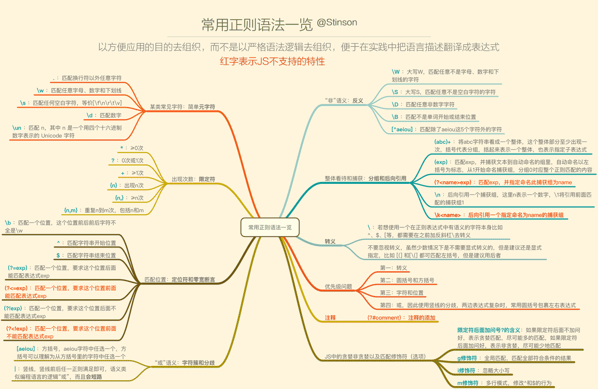

中国女排！
郎平和朱婷击掌庆祝。
中国女排的世界杯之旅落下了帷幕。
11战全胜，提前一轮锁定冠军，实现了世界杯卫冕目标的中国女排，也可以为2019年画下一个完满的句号。
本届世界杯上，中国女排所经历的强敌不少：俄罗斯、美国、巴西、荷兰、塞尔维亚……在和这些对手的对抗中，中国队既体现了优势，也暴露了问题。
离东京奥运会还有一年，郎平和她的球队还会为了奥运会的卫冕梦想继续磨练。

中国女排在世界杯的表现堪称完美。视觉中国
完胜最强对手，球队有足够上限
回顾整届赛事，中国女排和美国女排之间的交锋，可以看作是提前上演的冠亚军对决。
而在这场“决赛”中，中国女排拿下的是一场3比0的完胜。
之所以能够拿下这场最关键的对抗，除了美国女排在体能上稍有劣势之外，中国女排更加完备的赛前准备是最主要的原因：
赛前，郎平无论从针对性的战术布置，还是球队的心理建设上，都是以最高标准进行，球队也在实战中拿出了最好的状态。
两个关键点：发球、防守——中国队都做到了最佳，前者延迟对方的快攻，后者降低对方的得分效率和心气，最后把这个最强对手打得毫无脾气。
事实上，中国女排对于美国队的重视，和今年世界女排联赛上两度负于对手的惨痛经历分不开，尤其是在世界女排联赛江门站，主力出击的中国女排被美国队零封，给球队敲响了警钟。
本次比赛碰面之后，王梦洁就坦言，“之前在江门站对阵的时候，美国女排的水平真的很高。我们在拦防上也有针对性的准备。”这样一场比赛中的中国女排，可以说从技战术到心理，都在这支球队的最佳状态。
此番出征世界杯的美国女排虽然在阵容上有所更新，但是罗宾逊、拉尔森等几名主要名将仍在，换句话说，只要发挥出球队的水平，中国女排完全有能力对这样的强敌战而胜之。
郎平在现场指导队员。
应变，真的不能慢
包括对阵美国在内，中国队本届赛事对阵几支强队都取得了非常亮眼的成绩，比如对阵俄罗斯、塞尔维亚，以及拥有主场之利的日本队，都是以3比0取得完胜。
反而是对阵巴西和荷兰队的时候，赛前外界都预测中国队占据实力优势，但是真到了比赛中，还是遇到了一定的麻烦。
对阵荷兰队中国女排输掉一局，和对手攻击线上的爆发有直接关系，尤其是朱婷的前队友斯洛特耶斯表现出色，让中国队感受了一把世界级攻击手的能量。
而对阵巴西女排一战，中国女排一度大比分1比2落后被逼到悬崖边，这是和球队的应变速度不够迅速有关。
作为第二阶段的首个对手，巴西女排在那场比赛中展现出的防守强度远超第一阶段和中国队交锋的五支球队，加上对场地的不够适应，中国队打得并不顺利。
巴西主攻手加比和接应谢拉两名球员的出色发挥，更是一度让中国队头疼不已。赛后郎平说，此前中国队在世界女排联赛和巴西交手的时候，这两名球员不在巴西阵中，这对球队的准备和适应也造成了困难。
险胜巴西之后，郎平就直言球队在应变上做得还不够好，而类似的批评，在本届世界杯上出现了不止一次。
对阵喀麦隆，派出替补阵容的中国女排一度在第三局大比分落后，郎平表示队伍面对非洲球队的“怪球”应变不够快。而对阵塞尔维亚的夺冠一战，郎平仍然认为球队在拦网上有所不足，“当对对手不太熟悉的时候，防守效果不是很好。”
从本届世界杯来看，这是中国女排相对薄弱的环节——
只要郎平和教练组赛前准备充分，球队有足够的执行力实施计划，但一旦出现意料外的状况，情况就会较难把握 。
2018年10月，中国女排以1比3不敌意大利队。 新华社 资料
奥运主力阵容已浮现，全力面对意大利
强势夺得世界杯冠军，中国女排所展现的不仅是高超的实力，更有足够的自信，正如郎平所说，
“我们不在乎别人学习我们，没有什么好掖着藏着的。到时候提高了是骡子是马，大家上去互相较量。”
而从本届世界杯的整体情况来看，中国女排在东京奥运会的主力阵容也已经浮现。
在绝大多数比赛中，“朱袁张”加上颜妮、龚翔宇、丁霞、王梦洁的阵容就是中国女排的最强阵容，这也是郎平在里约奥运会结束后，球队完成更新换代后逐渐打造成型的一套阵容。
如果没有天才新星横空出世，或是有球员遭遇重大伤病，这一套框架不出意外将延续到奥运赛场。
在主攻线上，在去年世锦赛和今年世界杯都得到郎平信任的李盈莹将是最值得期待的新人，不过这名19岁小将无疑还需要历练。世界杯上，李盈莹的表现中规中矩，关键时刻下仍然会出现一些波动（比如对阵荷兰队一战6扣得1分）。
而在副攻线上，今年已经32岁的老将颜妮需要花更多精力维持体能和状态，替补席上，王媛媛、杨涵玉等球员想要挑起大梁也仍需时日。
至于接应位置和二传，龚翔宇和丁霞目前仍然是中国女排的首选，曾春蕾、姚迪等球员也具备一定实力，不过在郎平的体系中却更具“功能性”，是否出场还需视对手情况。
最后在自由人位置上，中国女排的配置比较强大，正值巅峰期的王梦洁加上经验丰富的里约冠军球员林莉，足以应对顶级大赛的需求。
登顶世界杯之后，距离东京奥运会也只剩下了不到一年的时间，球队在短暂的庆祝之后，就要像郎平所说的一样投入新的战斗，毕竟强敌意大利还将在前方等着我们。
本届女排世界杯意大利因积分原因缺席，但2018年，在朱婷首次以队长身份出征的女排世锦赛上，意大利女排在小组赛和半决赛两度阻击中国女排。而从2017年大奖赛中国澳门站开始，意大利队曾连续6次战胜中国女排，其中就包括女排世锦赛半决赛。面对埃格努这样力量堪比男子的选手，中国女排也需要找到解决办法。
所以为了备战奥运，2019-2020赛季排超联赛的赛程也被压缩，以此增加国家队集训的时间，郎平也已经早早进入备战状态，“很多细节和技术需要每天去积累，我们仍然有很多地方不足，我们还要继续努力。”